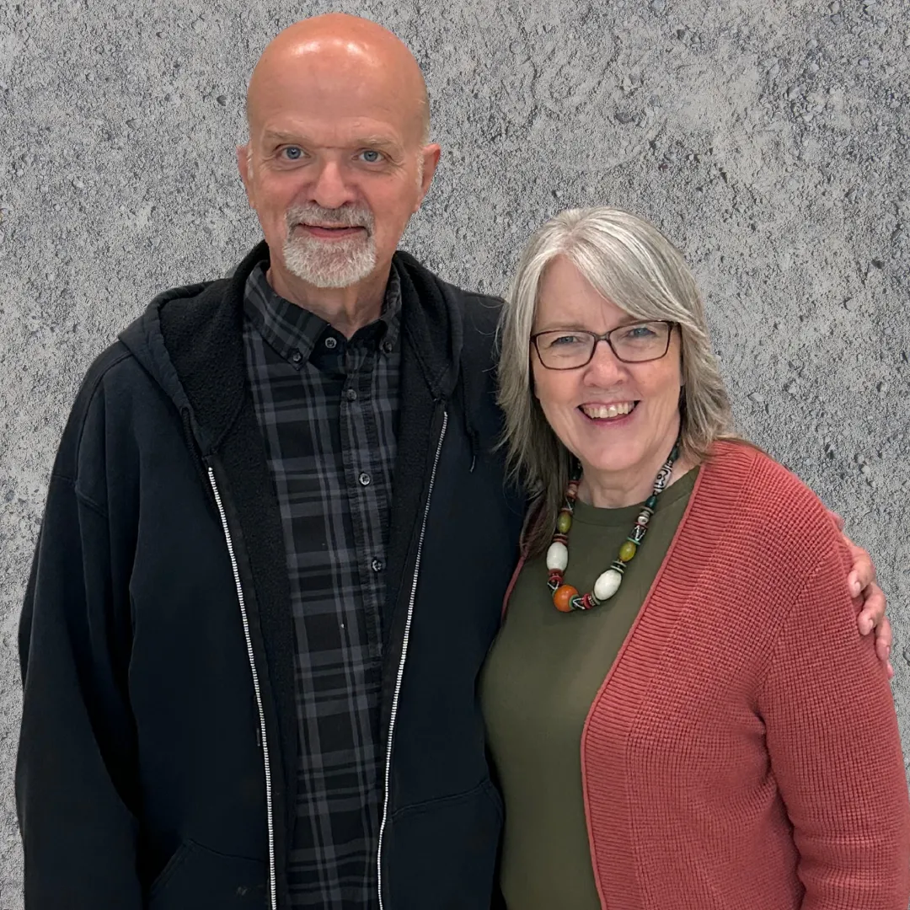

Pastor. Author. Speaker. Husband. Father. Grandfather.

Roger and Lori Loomis — Hope Community Church, Jefferson, Ohio
Roger and Lori Loomis bring over 43 years of pastoral experience to their ministry and family life. Graduates of Evangel University, with postgraduate work at Liberty University, they have pastored six churches across North Carolina, Alabama, and Ohio.
Currently, they lead Hope Community Church, a nondenominational congregation they founded in Jefferson, Ohio. Roger and Lori are ordained through the E4 Ministry Network and are proud parents of four children and grandparents to nine.
Roger's heart is simple: to resource leaders so they can encourage others. He writes and speaks from the trenches of real ministry — not from a distance, but from decades of showing up, making mistakes, learning, and pressing forward in faith.
His books reflect that same spirit — honest, practical, and grounded in Scripture. Whether you are a new pastor navigating your first call, a seasoned leader facing modern challenges, or a committed follower of Christ looking to go deeper, Roger's work meets you where you are.
Undergraduate degree in ministry and theology
Postgraduate studies in Christian leadership
Across North Carolina, Alabama, and Ohio
Ordained minister in good standing
Founder and lead pastor, Jefferson, Ohio
On ministry, parenting, healing, and discipleship
Graduated from Evangel University and completed postgraduate work at Liberty University, building a strong theological and leadership foundation.
Began pastoral ministry in the Southeast, leading congregations through growth, challenge, and transformation across two states.
Continued pastoral work in Ohio, eventually planting Hope Community Church in Jefferson — a nondenominational congregation built on biblical truth and community.
Published four books addressing ministry challenges, biblical parenting, soul healing, and discipleship. Speaks and writes to resource and encourage leaders at every stage.
Roger and Lori continue to lead Hope Community Church, create weekly content for pastors and believers, and invest in their four children and nine grandchildren.